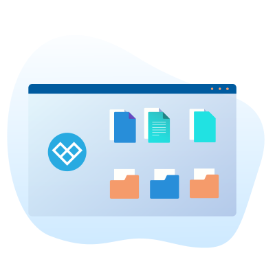

خرید هاست
پارس پک اولین ارائه دهنده خدمات میزبانی ابری در ایران
هاست ابری پارسپک بهترین گزینه برای وبسایتهایی است که میخواهند از خدمات میزبانی ابری یا cloud hosting استفاده کنند. پارسپک اولین ارائهدهنده خدمات میزبانی ابری در ایران است که خدمات هاست ابری را با قیمت مناسب و سرعتبالا در اختیار مشتریان قرار میدهد. میزبانی ابری برخلاف میزبانی اشتراکی، برای سایتهای پرترافیک بسیار مناسب خواهد بود. با استفاده از هاست ابری، مدیران سایت دیگر دغدغه مدیریت سرور را نخواهند داشت، اما از سرویسی با قدرت نزدیک به سرور اختصاصی بهره میبرند.
هاست ابری پارسپک در موقعیتهای ایران و آلمان، بر بستر لینوکس و مجهز به کنترل پنل دایرکت ادمین و سی پنل ارائه میشود. خرید هاست ابری برای وبسایتهای حرفهای، ارزان و درنتیجه مقرون بهصرفه است. خرید هاست ابری امکان این را دارد که، همیشه به میزان نیاز و استفاده از منابع، هزینه پرداخت میکنید. درنتیجه دیگر دغدغه قیمت هاست را به دلیل پرداخت هزینههای غیرمرتبط نخواهید داشت. همچنین، تیم پشتیبانی ۲۴ ساعته پارسپک نیز در این مسیر کنار شما خواهند بود.
هاست ابری
لورم ایپسوم متن ساختگی با تولید سادگی نامفهوم از صنعت چاپ، و با استفاده از طراحان گرافیک است، چاپگرها و متون بلکه روزنامه و مجله در ستون و سطرآنچنان که لازم است، و برای شرایط فعلی تکنولوژی مورد نیاز، و کاربردهای متنوع با هدف بهبود ابزارهای کاربردی می باشد، کتابهای زیادی در شصت و سه درصد گذشته حال و آینده، شناخت فراوان جامعه و متخصصان را می طلبد، تا با نرم افزارها شناخت بیشتری را برای طراحان رایانه ای علی الخصوص طراحان خلاقی، و فرهنگ پیشرو در زبان فارسی ایجاد کرد، در این صورت می توان امید داشت که تمام و دشواری موجود در ارائه راهکارها، و شرایط سخت تایپ به پایان رسد و زمان مورد نیاز شامل حروفچینی دستاوردهای اصلی، و جوابگوی سوالات پیوسته اهل دنیای موجود طراحی اساسا مورد استفاده قرار گیرد.
هاست ابری
لورم ایپسوم متن ساختگی با تولید سادگی نامفهوم از صنعت چاپ، و با استفاده از طراحان گرافیک است، چاپگرها و متون بلکه روزنامه و مجله در ستون و سطرآنچنان که لازم است، و برای شرایط فعلی تکنولوژی مورد نیاز، و کاربردهای متنوع با هدف بهبود ابزارهای کاربردی می باشد، کتابهای زیادی در شصت و سه درصد گذشته حال و آینده، شناخت فراوان جامعه و متخصصان را می طلبد، تا با نرم افزارها شناخت بیشتری را برای طراحان رایانه ای علی الخصوص طراحان خلاقی، و فرهنگ پیشرو در زبان فارسی ایجاد کرد، در این صورت می توان امید داشت که تمام و دشواری موجود در ارائه راهکارها، و شرایط سخت تایپ به پایان رسد و زمان مورد نیاز شامل حروفچینی دستاوردهای اصلی، و جوابگوی سوالات پیوسته اهل دنیای موجود طراحی اساسا مورد استفاده قرار گیرد.
هاست ابری
لورم ایپسوم متن ساختگی با تولید سادگی نامفهوم از صنعت چاپ، و با استفاده از طراحان گرافیک است، چاپگرها و متون بلکه روزنامه و مجله در ستون و سطرآنچنان که لازم است، و برای شرایط فعلی تکنولوژی مورد نیاز، و کاربردهای متنوع با هدف بهبود ابزارهای کاربردی می باشد، کتابهای زیادی در شصت و سه درصد گذشته حال و آینده، شناخت فراوان جامعه و متخصصان را می طلبد، تا با نرم افزارها شناخت بیشتری را برای طراحان رایانه ای علی الخصوص طراحان خلاقی، و فرهنگ پیشرو در زبان فارسی ایجاد کرد، در این صورت می توان امید داشت که تمام و دشواری موجود در ارائه راهکارها، و شرایط سخت تایپ به پایان رسد و زمان مورد نیاز شامل حروفچینی دستاوردهای اصلی، و جوابگوی سوالات پیوسته اهل دنیای موجود طراحی اساسا مورد استفاده قرار گیرد.
هاست ابری
لورم ایپسوم متن ساختگی با تولید سادگی نامفهوم از صنعت چاپ، و با استفاده از طراحان گرافیک است، چاپگرها و متون بلکه روزنامه و مجله در ستون و سطرآنچنان که لازم است، و برای شرایط فعلی تکنولوژی مورد نیاز، و کاربردهای متنوع با هدف بهبود ابزارهای کاربردی می باشد، کتابهای زیادی در شصت و سه درصد گذشته حال و آینده، شناخت فراوان جامعه و متخصصان را می طلبد، تا با نرم افزارها شناخت بیشتری را برای طراحان رایانه ای علی الخصوص طراحان خلاقی، و فرهنگ پیشرو در زبان فارسی ایجاد کرد، در این صورت می توان امید داشت که تمام و دشواری موجود در ارائه راهکارها، و شرایط سخت تایپ به پایان رسد و زمان مورد نیاز شامل حروفچینی دستاوردهای اصلی، و جوابگوی سوالات پیوسته اهل دنیای موجود طراحی اساسا مورد استفاده قرار گیرد.
هاست ابری چیست ؟
هاست ابری نوعی از میزبانی وب است که منابع چند سرور را در اختیار کاربر قرار میدهد. بهطور کلی هاست (host) بهمعنای میزبانی است. در سرویسهای اینترنتی نیز این سرویس، وظیفه میزبانی از دادههای وبسایت یا اپلیکیشنها را برعهده دارد. خرید هاست ابری این اطمینان را به شما میدهد که فضا و قدرت پردازشی مناسب را بسته به نیاز خود در سریعترین زمان در اختیار دارید.
خرید هاست ابری، بستر میزبانی با قدرتی نزدیک به سرور را در اختیار شما قرار میدهد. این نوع از هاست، فضا و پهنای باند کافی را بسته به نیاز شما در اختیارتان قرار میدهد. بهخاطر بهرهمندی از زیرساخت ابری هم میتوان در هر زمان، منابع هاست ابری را تغییر داد و از قدرت مقیاسدهی بالا بهره برد.
انواع هاست ابری
پارسپک خدمات میزبانی خود را در قالبهای متنوع متناسب با نیاز کاربران ارائه میکند تا علاوه بر سهولت استفاده، کاربران بتوانند از یک سرویس بهینهشده با قیمت مناسبتر استفاده کنند تا یک سرویس اختصاصی برای متناسب با سایت خود داشته باشند. میتوان این خدمات را در قالبهای زیر معرفی کرد. در ادامه با ویژگیهای هرکدام از سرویسهای میزبانی ابری پارسپک آشنا میشوید.

خرید هاست اشتراکی
خرید هاست اشتراکی بهمعنای خرید یک فضای میزبانی مشترک است. منابع سرویس میزبانی اشتراکی با سایر کاربران روی یک سرور به اشتراک گذاشته میشود. به بیان سادهتر منابع سرور شامل رم، سی پی یو و سایر منابع در این نوع از هاست بهصورت اشتراکی تقسیم میشود. این سرویس نیز مانند سرویسهای دیگر بر بستر سیستمعامل لینوکس و ویندوز، در ایران و اروپا ارائه میشود. هاست اشتراکی به دلیل سادگی در مدیریت، بسیار محبوب است.
خرید هاست وردپرس
وردپرس (WordPress) یکی از محبوبترین اسکریپتها یا سیستمهای مدیریت محتوا (CMS) است که برای راهاندازی انواع وبسایت خبری، فروشگاهی، سازمانی و غیره استفاده میشود. به سرویسی که قابلیت نصب و میزبانی اسکریپت وردپرس را داشته و برای آن بهینهشده باشد، هاست وردپرس گفته میشود. امکان نصب وردپرس تقریبا روی هر نوع از میزبانی ابری وجود دارد. اغلب وبمسترها، هاست ابری لینوکس را برای این CMS انتخاب میکنند.
خرید هاست ابری
با خرید هاست ابری که نوع خاصی از میزبانیهای معمولی میباشد، یک سرویس میزبانی پر سرعت با قیمت مناسب با زیرساخت کلود به کاربر ارائه داده میشود، تفاوت عمده این host با سایر host ها در تغییر منابع آن به تفکیک و در لحظه میباشد، یعنی کاربر برخلاف میزبانیهای نسل قدیم که فقط امکان تغییر فضا را داشتند، میتواند منابعی همچون رم و سی پی یو را نیز متناسب با نیاز خود کاهش یا افزایش دهید و بابت منابع مصرفی هزینه پرداخت کنید.
خرید هاست دانلود
میزبانی دانلود به سرویسی گفته میشود که جهت نگهداری فایل بهینهشده است. خرید هاست ابری دانلود در کنار host اصلی وبسایت، سرعت لود را بهطور چشمگیری افزایش میدهد. با ترکیب این سرویسها، اغلب اطلاعات حجیم مانند تصاویر، ویدیوها و موارد مشابه در host دانلود قرار میگیرد و فقط اطلاعات کلی روی سایت قرار داده میشود. میزبانی ابری دانلود برای سایتهای دانلود بهترین گزینه محسوب میشود. البته این سرویس پارسپک محدود به سایتهای اشتراک فایل نیست و میتوان نسخههای مخصوص پخش پادکست و ویدیو استریمینگ نیز از آن تهیه کرد.
خرید هاست نمایندگی
این سرویس برای کاربرانی مناسب است که میخواهند نیم سرور (Nameserver) اختصاصی خود را داشته باشند. همچنین وبمسترها، طراحان و توسعهدهندههایی که قصد فروش و ارائه هاست به مشتریان خود دارند، از این سرویس استفاده میکنند. این سرویس میزبانی پارسپک بهصورت تهیه اعتبار ارائه میشود و محدودیتی در ایجاد host و منابع ندارد. همچنین سرویس نمایندگی، تمامی امکانات و قابلیتهای هاستهای ابری دیگر را دارد. با تهیه این سرویسها علاوه بر کسب درآمد از طریق فروش سرویس ابری، میتوانید سایتهای خود را به هزینه کمتری میزبانی کنید.
خرید هاست ایران
میزبانی ایران یا هاست ابری ایران، سرویس میزبانی ابری است که در دیتاسنترهای مستقر در ایران ارائه میشود. خرید این هاست بیشتر مناسب افراد و وبسایتهایی است که کاربرانشان در داخل ایران هستند. همچنین سرویسهایی که نیاز به IP ایران دارند، از این نوع هاست ابری استفاده میکنند. هاست ابری ایران نسبت به host موقعیت خارج قیمت پایینتری دارد و ترافیک اینترنت در این نوع از هاست ابری هم برای مشتریان داخلی بهصورت نیم بها محاسبه میشود.
خرید هاست خارج
هاست خارج یا هاست ابری خارجی پارسپک، در دیتاسنترهای موقعیت اروپا و در کشور آلمان ارائه میشود. این نوع از میزبانی مناسب سرویسهایی است که بیشتر مشتریان و بازدیدکنندههای خارج از ایران دارند. این هاستها با IP خارجی ارائه میشوند و برای اجرای نرمافزارهایی که از داخل ایران تحریم هستند، بهترین گزینه خواهند بود. البته قیمت هاست ابری خارج، بالاتر از هاست ایران است.
خرید هاست لینوکس
هاست لینوکس به سرویس میزبانی گفته میشود که روی سیستمعامل لینوکس راهاندازی شده باشد. خرید هاست ابری لینوکس برای افرادی مناسب است که ترکیبی از هزینه پایین، توانایی مدیریت ترافیک بالا و قدرت پردازشهای پیچیده را نیاز دارند. کنترل پنل هاست ابری لینوکس میتواند از نوع دایرکت ادمین (Direct Admin) یا سی پنل (cPanel) باشد.
خرید هاست ویندوز
هاست ابری ویندوز، خدمات میزبانی را بر بستر ویندوز به کاربران ارائه میکند. این نوع از هاست، رابط کاربری آشناتری دارد. همچنین مشتریانی که روی هاست خود، نیاز به مدیریت زیادی از سمت ارائهدهنده ندارند، از هاست ویندوز استفاده میکنند. کنترل پنل این نوع از هاست ابری معمولا پلسک (Plesk) است که طرفداران خاص خود را هم دارد.
خرید هاست دایرکت ادمین
خرید میزبانی دایرکت ادمین که با کنترل پنل Direct Admin میباشد با قیمت مناسب در هاستینگ پارس پک امکان پذیر میباشد. این کنترل پنل قابلنصب بر روی سیستمعامل لینوکس است و تحریمهای موجود تاثیری بر روی آن نگذاشته است و دسترسیهای مناسبی جهت استفاده کاربر بر روی آن در نظر گرفته شده است. کار و دسترسی به این سرویس میزبانی نیز بسیار راحت و کاربرپسند میباشد.
خرید هاست وردپرس
وردپرس (WordPress) یکی از محبوبترین اسکریپتها یا سیستمهای مدیریت محتوا (CMS) است که برای راهاندازی انواع وبسایت خبری، فروشگاهی، سازمانی و غیره استفاده میشود. به سرویسی که قابلیت نصب و میزبانی اسکریپت وردپرس را داشته و برای آن بهینهشده باشد، هاست وردپرس گفته میشود. امکان نصب وردپرس تقریبا روی هر نوع از میزبانی ابری وجود دارد. اغلب وبمسترها، هاست ابری لینوکس را برای این CMS انتخاب میکنند.
خرید هاست جوملا
جوملا (Joomla) نیز مانند سیستم مدیریت محتوای وردپرس یکی از CMSهای پرطرفدار محسوب میشود. نصب این سیستم هم روی هر نوع از میزبانی ابری ممکن است. در مجموع به هاستی که برای این CMS بهینه شده است، هاست جوملا میگویند. برای پیادهسازی جوملا نیز اغلب وبمسترها از هاست لینوکس استفاده میکنند.